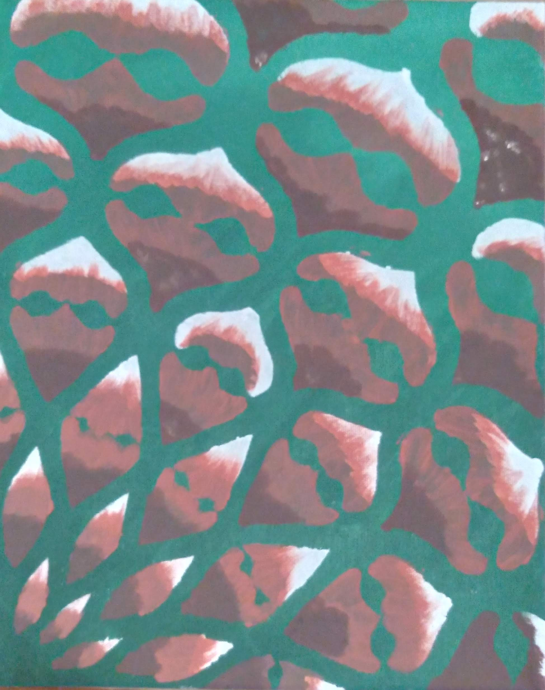

Acquatic Invasion
Artist: Jamie Miller
"Acquatic Invasion" is a 12x18 acrylic on canvas painting.
Artist: Jamie Miller
"Acquatic Invasion" is a 12x18 acrylic on canvas painting.

Artist: Jamie Miller
"Citris Sunset" is a 4x6 acrylic on cardstock painting.
Artist: Jamie Miller
"Desert Sands" is a 4x6 acrylic on cardstock painting.
Artist: Jamie Miller
"Stained Glass Star" is a 4x6 digital print on glossy photo paper.
Artist: Jamie Miller
"Digital River" is an unprinted digital image created using GIMP
Decorator: Jamie Miller
"Oh Snow Yummy!" was a white cake with a buttercream decorator frosting.
Decorator: Jamie Miller
"SpongeBob SquareCake" was a yellow cake with a buttercream decorator frosting.
Decorator: Jamie Miller
"Gone Quick!" was a chocolate cake with a buttercream decorator frosting.
Artist: Jamie Miller
"It Must Be Pretty" is an oil painting on the cover of a 3-ring binder. If I must carry it...
Artist: Jamie Miller
"First Rose" is a 5x8 pencil sketch. It is the drawing that started it all!
Artist: Jamie Miller
"Puppet on a String" is a 5x8 pencil sketch. It is accompanied by a poem of the same name.
A feeling of control
is what I really need
Instead you take my soul
No dignity for me
You make me dance to music
With no rhythm or no beat
You build my up with praise
To knock me off my feet
Your puppet on a string
fulfilling your hearts desire
that's all I'll ever be
hanging from this wire
Like Pinocchio and his dreams
of becoming a little boy
I need to be more in life
than someone's little toy.
Artist: Jamie Miller
"The Island" is a pencil sketch. It also is accompanied by a poem of the same name.
To look upon this island
from far above the trees
you think you've found the perfect place
for heaven on earth to be
You move in a little closer
to walk along its beach
to feel the sand between your toes
it's all within your reach
You decide to make this island
a place you now call home
it's everything you ever wanted
a shelter from the storm
But the storm is never over
on this little island in the sea
the very things that drew you near
are the reasons why you leave
The branches of the trees
stretching outward for a hand
never reaching far enough
to escape this little land
The water on the beaches
where you loved to swim and play
kept the island to itself
as it slowly washed away.
Artist: Jamie Miller
"Eye See You" is an 8½X11 pencil sketch. It was created using a spirograph.
Artist: Jamie Miller
"Wrapped in Peach" is a 5x8 pencil sketch.
Artist: Jamie Miller
"Lotus Flower" is a 8x10 pencil sketch.
Artist: Jamie Miller
"Lotus Gift" is a 8x10 pencil sketch.
Artist: Jamie Miller
"Rainbow Snowflake" is an unprinted digital image created using ZenTrails
Artist: Jamie Miller
"First Day of School" is an 8X10 pencil sketch.